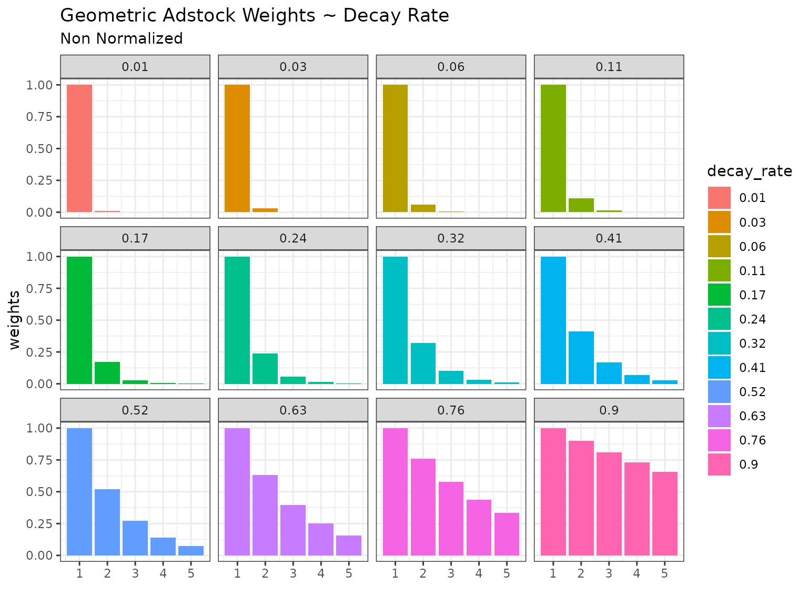
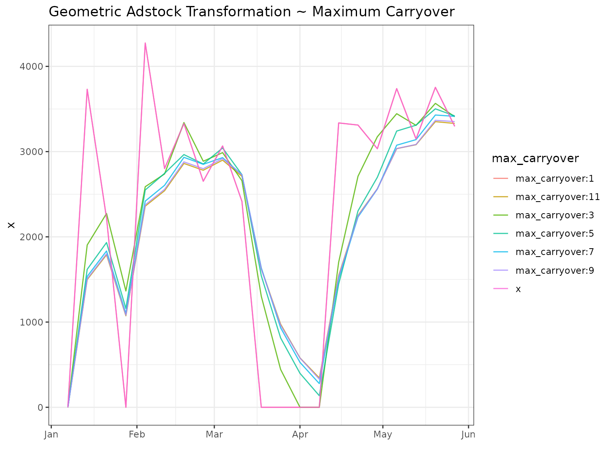

Adstock-Weights-and-Transformations
Adstock-Weights-and-Transformations.RmdGeometric Adstock Weights
The function for geometric adstock weights has the following form:
see Bayesian Methods for Media Mix Modeling with Carryover and Shape Effects
Normalized
normalize is set to TRUE by default so the
sum of the weights will be 1.
a <- geometric_adstock_weights(decay = 0.1, max_carryover = 5)
b <- geometric_adstock_weights(decay = 0.9, max_carryover = 8)the length of the result will equal to max_carryover -
that is the function of the parameter
Setting normalize = FALSE will return unscaled
weights
a <- geometric_adstock_weights(decay = 0.2, normalize = FALSE)
b <- geometric_adstock_weights(decay = 0.2)Changing the Decay Rate
Keeping max_carryover = 5 constant and varying the decay
rate shows that a small decay rate leads to a small amount of ad
exposure volume being carried over into the future while a large decay
rate will carry over more of the exposure volume. The choice for the
rate will depend on both the medium/channel/tactic/independent variable
being included, as well as the dependent variable. For example sales
of durable goods like cars or washing machines may require a larger
carry over in ad exposure variables than subscriptions to a
streaming service. Likewise OOH Brand advertising may require a
larger decay rate than a digital re-targeting tactics.

There is the option of no normalizing the weights however this will lead to ad exposure inflation and applying the adstock transformation to the data. This may make sense to do if contextual it is known that ad exposure for a given channel is unreported - however this is best handled in data preparation rather than modeling and so the default behavior is to normalize the weights.

Changing Maximum Carryover
Having seen the effect of changing the decay rate we can now explore
the effects of smaller and larger max_carryover parameter.
We’ll keep decay rate = 0.6. You can see in the plots that
when maximum carryover is set to 1 no carryover will take place. For any
decay rate the normalized weight will be one. As we
increase the maximum carryover there is a visible effect up to around ~7
after which the tail end of the weights becomes very small and thus has
a small effect.
Adstock Transformations
Let’s now apply these weight to sample data:
Changing Decay Rate
When applying the geometric adstock to the data you can see that the higher decay rate has a smoothing effect wherein both the peaks and the troughs of the original data are dampened and lifted. The larger the decay rate the stronger the smoothing.


Changing Maximum Carryover
As we saw with the weights - the maximum carryover parameter is really a parameter that unlocks the decay rate and allows it to come into full effect. As a result we see that when we keep the dacay rate constant at 0.6 the transformation only kicks in at max carryover > 1. The impact of changing the maximum carryover then diminishes with virtually no effect between 8-12.
